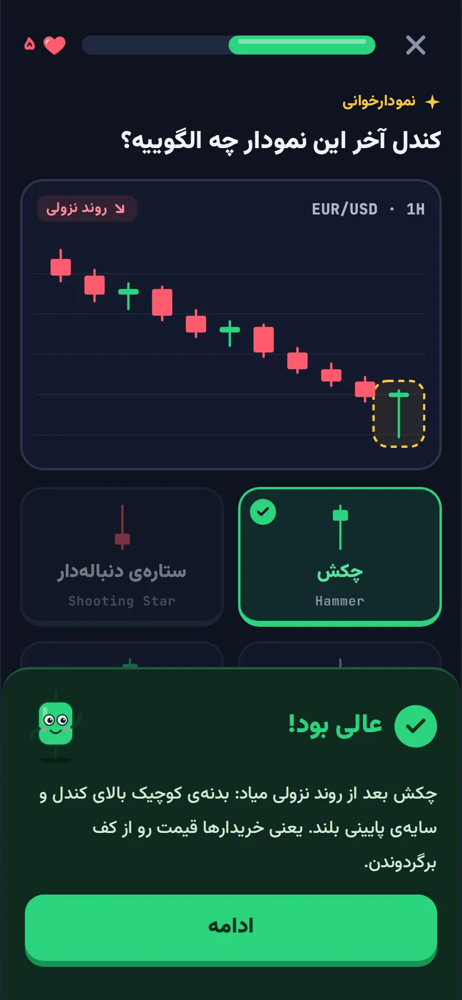
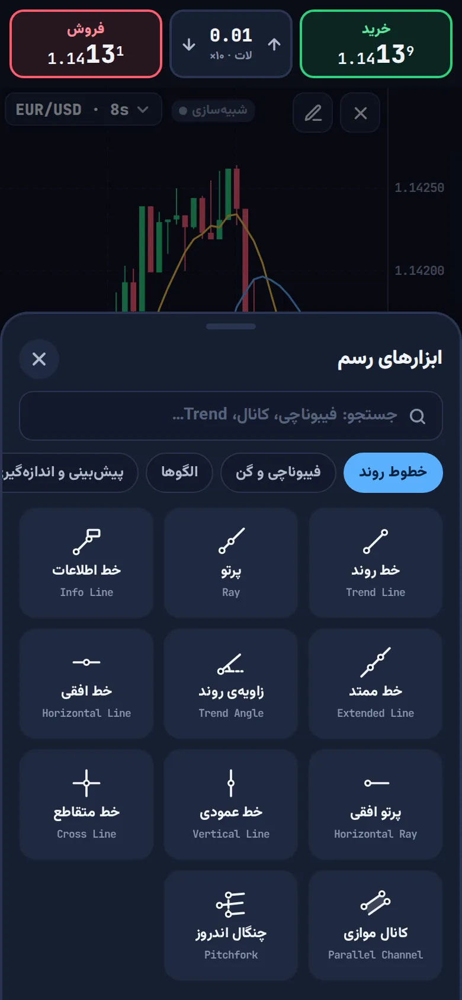
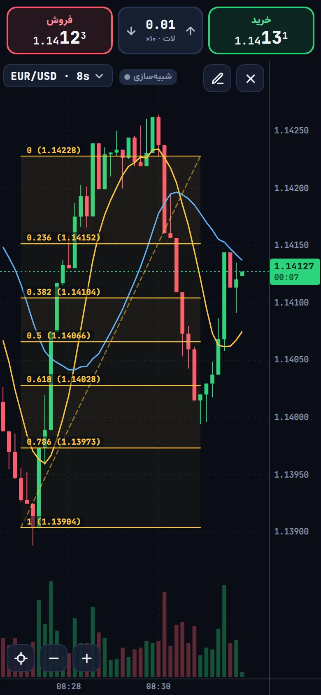
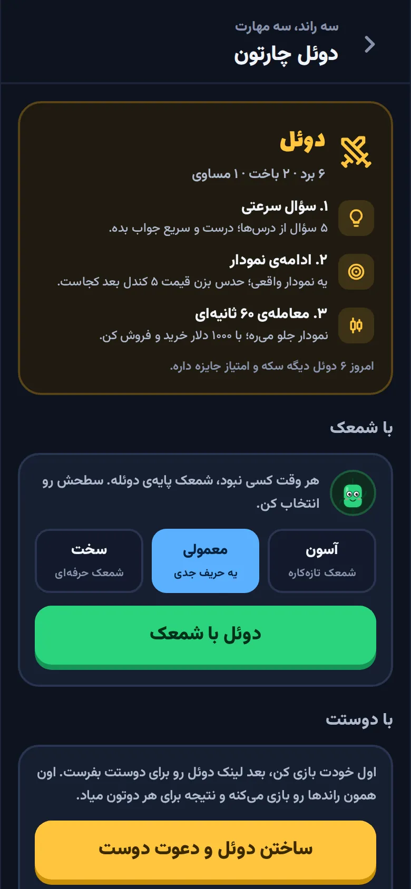
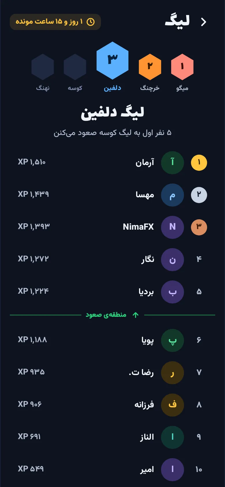
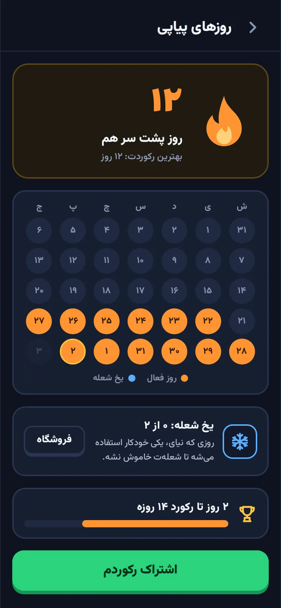

آموزش ترید از صفر · فارکس، طلا و کریپتو
ترید رو مثل یه بازی یاد بگیر
روزی پنج دقیقه با شمعک: درسهای کوتاه با نمودار واقعی، تمرین با پول مجازی و دوئل با دوستات. از «کندل چیه؟» تا اسمارت مانی و هارمونیک، قدم به قدم.
- ۸ دوره
- ۲۷۹ درس کوتاه
- ۴۲ ابزار رسم
سلام! من شمعکم. بیا با هم ترید رو یاد بگیریم.
- کندلشناسی
- EUR/USD
- حمایت و مقاومت
- خط روند و کانال
- XAU/USD
- فیبوناچی
- RSI و MACD
- مدیریت ریسک
- BTC/USDT
- ایچیموکو
- پرایس اکشن
- اسمارت مانی
- فیوچرز و لیکوئید
- امواج الیوت
- ETH/USDT
- الگوهای هارمونیک
- بکتست
LESSONدرسها
آموزش ترید از صفر، روزی پنج دقیقه
هر درس چند اسلاید کوتاه و چند سؤاله. نمودار رو میبینی، الگو رو پیدا میکنی و همون لحظه میفهمی درست زدی یا نه.
- سؤالها روی نمودار شمعیان، نه فقط متن
- امتیاز، قلب و صندوقچه، مثل یه بازی واقعی
- مرور هوشمند: اشتباههات برمیگردن تا یادت بمونن
- بلدی؟ با آزمون پرش واحدهای آسون رو رد کن

SIMشبیهساز
شبیهساز معامله با پول مجازی
قبل از اینکه پول واقعی وسط بذاری، با ۱۰٬۰۰۰ دلار مجازی تمرین کن و ببین تحلیلت چقدر جواب میده.
- بیتکوین، اتریوم، طلا و یورو/دلار با قیمت زنده
- سفارش لیمیت و استاپ، حد ضرر و حد سود، و اهرم
- ۴۲ ابزار رسم به سبک تریدینگویو: خط روند، فیبوناچی، کانال و الگوها
- بازپخش بازار، چالشها و ژورنال معاملهها


DUELدوئل
با دوستات دوئل کن
اول خودت بازی میکنی، بعد لینک دوئل رو برای دوستت میفرستی تا همون راندها رو بازی کنه. کسی نبود؟ شمعک در سه سطح آسون، معمولی و سخت پایهست.
- سؤال سرعتیپنج سؤال از درسها، پونزده ثانیه برای هر کدوم.
- ادامهی نموداریه نمودار واقعی؛ حدس بزن قیمت پنج کندل بعد کجاست.
- معاملهی ۶۰ ثانیهاینمودار جلو میره و تو با ۱۰۰۰ دلار خرید و فروش میکنی.

STREAKهر روز
هر روز یه قدم نزدیکتر به تریدر شدن
ترید رو با تمرین کم ولی هر روزه یاد میگیری، نه با یه شب بیداری. چارتون کمکت میکنه هر روز برگردی.
- روزهای پیاپی، و یخ شعله برای روزی که نمیرسی
- سه مأموریت تازه هر روز، با صندوقچهی جایزه
- لیگ هفتگی، از میگو تا نهنگ
- کارت اشتراک برای رکوردها و دورههایی که تموم میکنی


WATCHLISTدورهها
۸ دوره، از صفر تا تحلیل پیشرفته
۹۳ واحد و ۲۷۹ درس. از هر جا که بلدی شروع کن و هر وقت خواستی دورهی بعدی رو اضافه کن.
مبانی ترید
بازار مالی چیه، نمودار و تایمفریم، انواع سفارش، کار با پلتفرم و انتخاب بروکر.
فارکس و طلا
جفتارزها، پیپ و لات، طلا، نفت و شاخصها، تقویم اقتصادی و فاندامنتال.
کریپتو
از بیتکوین و بلاکچین تا صرافی، امنیت کیف پول، دیفای، فیوچرز و دادههای آنچین.
تحلیل تکنیکال
کندلشناسی، روند، حمایت و مقاومت، الگوهای نموداری، فیبوناچی و تحلیل چندزمانی.
ریسک و روانشناسی
اندازهی ریسک، ریاضی ضرر، کنترل احساسات، سوگیریهای ذهنی و انضباط.
اندیکاتورها
میانگین متحرک، بولینگر، RSI، MACD، واگرایی، حجم و ولوم پروفایل، و ایچیموکو.
استراتژیهای معاملاتی
شکست، رنج، سوئینگ، دیترید و اسکالپ، و ساختن سیستم خودت با بکتست.
تحلیل پیشرفته
پرایس اکشن، عرضه و تقاضا، اسمارت مانی، امواج الیوت و الگوهای هارمونیک.
آموزش میدیم، سیگنال نمیفروشیم
بازار پره از کانال سیگنال و وعدهی سود تضمینی. چارتون کارگزار یا مشاور مالی نیست؛ کمکت میکنه خودت نمودار رو بفهمی، ریسکت رو مدیریت کنی و قبل از پول واقعی، با پول مجازی تمرین کنی.
سؤالهایی که زیاد میپرسن
چارتون رایگانه؟
شروعش رایگانه و برای یادگیری و تمرین هیچ پول واقعی لازم نیست. سکههای داخل اپ مجازیان و با درس خوندن جمع میشن.
هیچی از ترید بلد نیستم؛ به دردم میخوره؟
دقیقاً برای همینه. دورهی «مبانی ترید» از این شروع میکنه که بازار مالی چیه و نمودار چطور خونده میشه. اگه چیزایی بلدی، با آزمون پرش واحدهای آسون رو رد کن.
برای تمرین پول واقعی لازمه؟
نه. شبیهساز با ۱۰٬۰۰۰ دلار مجازی کار میکنه و قیمتهاش از بازار زنده میاد. تا وقتی آماده نشدی، سراغ پول واقعی نرو.
چارتون سیگنال خرید و فروش میده؟
نه. چارتون فقط آموزشیه، کارگزار یا مشاور مالی نیست و هیچکدوم از مطالبش توصیهی سرمایهگذاری نیست.
روی گوشی کار میکنه؟
آره. نسخهی وب روی مرورگر گوشی کار میکنه و میتونی به صفحهی اصلی گوشی اضافهش کنی تا مثل یه اپ باز بشه. نسخهی اندروید و iOS هم در راهه.
حساب کاربری لازمه؟
برای شروع نه؛ پیشرفتت روی همون دستگاه ذخیره میشه. با ساختن حساب، پیشرفتت روی همهی دستگاههات همگام میشه و میتونی توی لیگ هفتگی باشی و با دوستات دوئل کنی.
اولین درست رو همین امروز بزن
پنج دقیقه وقت داری؟ همین کافیه. بدون نصب، روی مرورگر گوشی یا کامپیوتر.
شروع رایگان